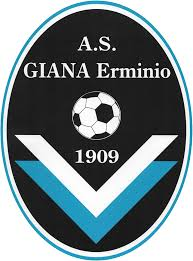

Giana Erminio

L'Associazione Sportiva Giana Erminio, meglio nota come Giana Erminio (nonché Erminio Giana, Giana Erminio Gorgonzola o ancora Giana), è una società calcistica italiana con sede nella città di Gorgonzola (MI). Milita in Serie C, terza divisione del campionato italiano di calcio.
Fondata nel 1909 con la denominazione di Unione Sportiva Argentia, ha adottato il corrente appellativo dapprima transitoriamente nel 1933 e in maniera stabile dal 1947: per oltre un secolo ha preso parte a competizioni dilettantistiche a carattere locale (regionale e provinciale), accedendo al livello professionistico per la prima volta nel 2014.
È l'unica società calcistica d'Italia, tra le militanti in un campionato a carattere nazionale, a portare come denominazione un antroponimo